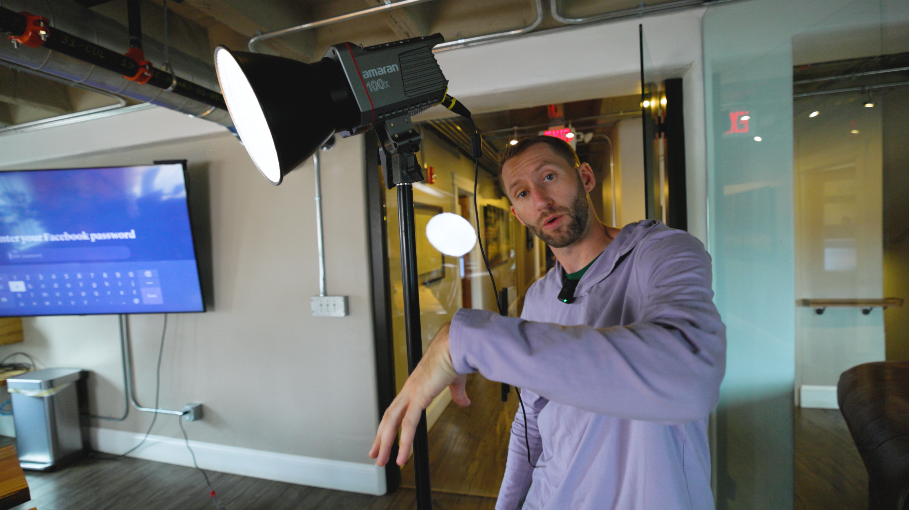

01 / Proposal
Prepared for Jason Lewis
Search-first real estate channel launch
Build a YouTube lead system for Casper and Wyoming.
This is not a general branding play. It is a focused launch built to capture relocation traffic, answer the questions buyers already search, and turn YouTube into a long-tail lead source.
What matters
CTR, watch time, and lead quality
Not the goal
Vanity metrics
Strategy alignment
Lock the audience, search angles, and content priorities before production begins.
Scripts + shoot prep
Finalize outlines, hooks, and production structure so the recording day stays efficient.
Batch production day
Capture the launch slate in one focused session designed around clarity and repeatability.
Edit + launch system
Deliver polished videos and move directly into a repeatable weekly publishing rhythm.

Production quality Credible on-camera presence
Credible on-camera presence